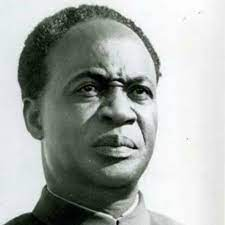
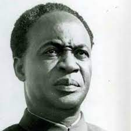

Over the years, Ghana has had several Presidents who were voted into Power to serve the country. Throughout their tenure, these presidents brought development in different sectors of the country’s economy. Here are the top 3 Influencial Presidents would love to share to the whole world. Their early lives, family, education and accomplishments would be captured in this website.Click on their names to learn about them.
 President Mills

President Nkrumah
President Mills

President Nkrumah
 President Rawlings
President Rawlings